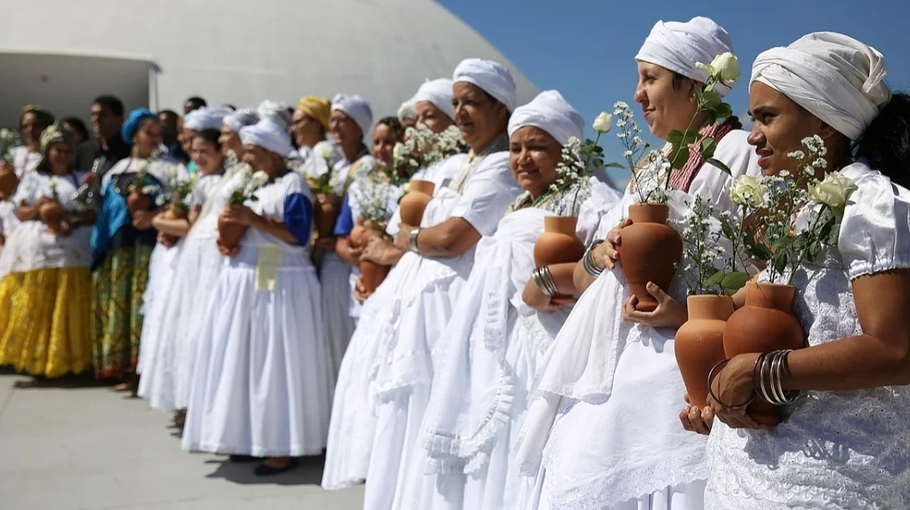

São aquelas originadas na cultura dos diversos povos africanos trazidos como escravos ao Brasil entre os séculos XVI e XIX, tendo um importante papel na preservação das tradições culturais dos diferentes grupos étnicos negros.
Candomblé
O Candomblé é uma religião de matriz africana que cultua os orixás. O termo candomblé vem da junção das palavras quimbundo candombe (dança com atabaques) + iorubá ilê (casa), que significa casa da dança com atabaques. Decorrida do animismo africano, a religião tem por base a alma da Natureza.
